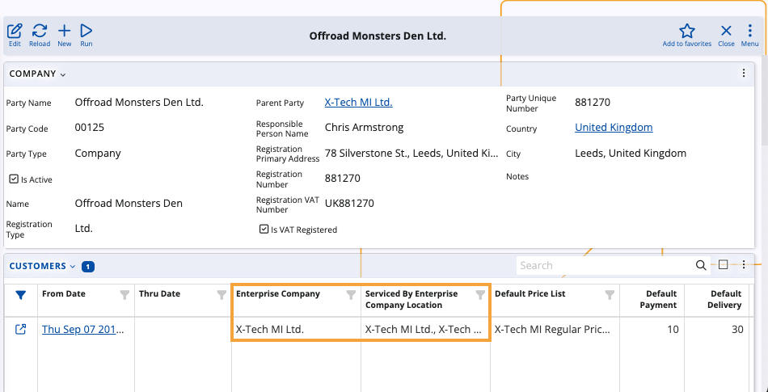

How to define a user of a Client Center
This article provides a step-by-step guide on defining a new user and configuring their access to a Client Center website.
If you haven't created such a website already, please refer to this guide.
Prerequisites
Before a user can be granted access to a Client Center by an administrator, they must first have issued a request for a local account.
Required fields are Е-mail, Full Name, and Password.

Set up a user account
Once a customer has sent a request for an account, they will appear as an External Community User which you can begin to configure.
Navigate to the Users panel within the Security section of the Setup module.
Upon accessing the navigator, locate the user account and click on the Edit button located to the left of its Login details.

Assign a person to the user. If such hasn't already been registered on the platform, you can create a new one on the spot.
Either right-click on the Person field or click the three-dot button.
In both cases, this will expand a dropdown menu where you need to select Create new.

You will be redirected to a separate form for the creation of a new person.
There are three critical fields: First Name, Last Name and Parent Party.

Click on Save and reload to finish creating the new person.
You will be brought back to the user definition form. Click on Save and reload again to apply all settings.
Make sure that the Parent Party of the Person (the one in which they are employed) is a customer of the current Enterprise Company.
To do so, open it from the Person form and locate its Customers panel. If it's not visible, add it through the Customize form option.
In the Customers panel, verify that two fields are filled:
Enterprise Company - the Parent Party is a customer of this company, for which the Client Center is created.
Serviced By Enterprise Company Location - the respective Enterprise Company must be serviced by a particular location.

Click on Save and reload to apply your changes.
If you've passed all the steps successfully, you may proceed to apply platform settings.
Note
The screenshots taken for this article are from v24 of the platform.